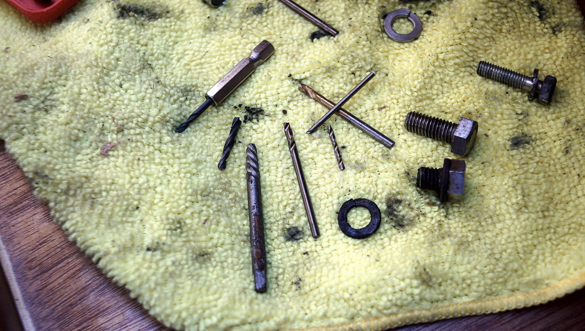
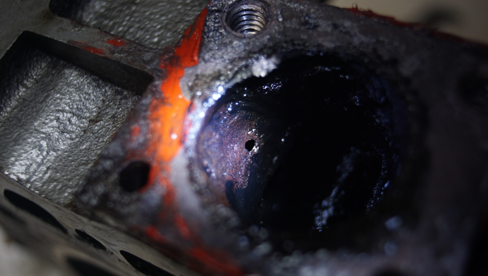
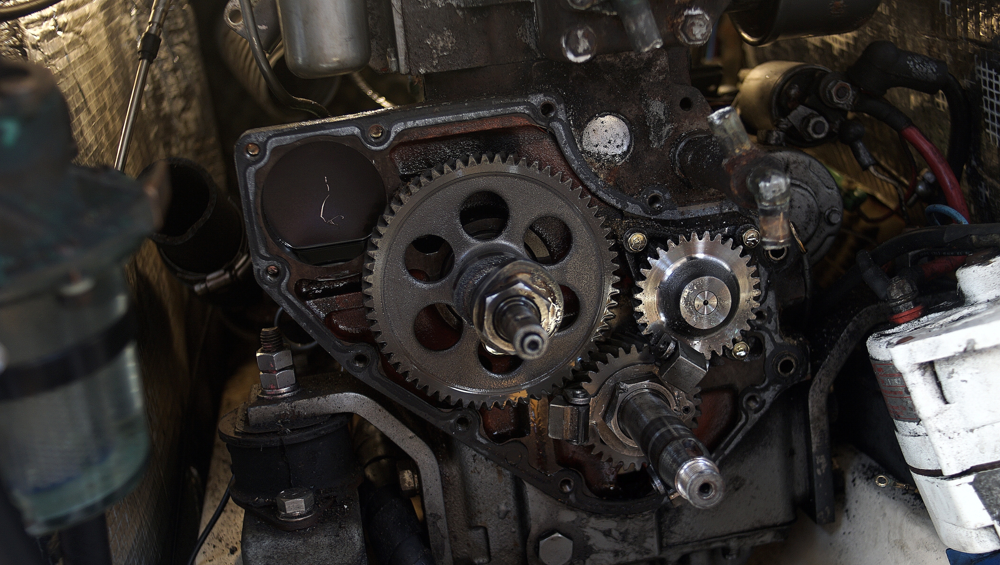
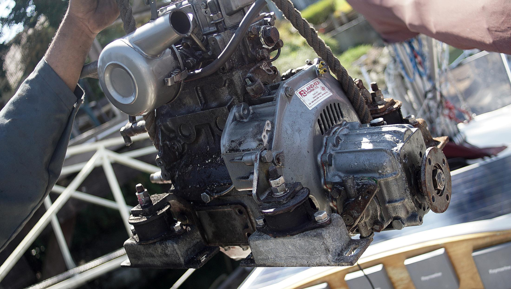

engine rebuild
In the winer of 2021, we started to have engine issues with Calcifer, our Yanmar 2GM raw water cooled diesel engine.
The problems began while doing regular maintenance. We inspected the exhaust elbow. The elbow was held onto the engine head with 3 bolts, we found that two out of the 3 were rusted in place. What to do, what to do! In the end, we had to drill them out. Drilling into stainless steel is a tedious, backbreaking affair.

We successfully drilled out the first, after many days and many cobalt drill bits. The second hole started well, but then we had the brilliant idea to use a screw extractor. Predictably, the tip broke inside of the hole. The damn thing was wedge into a hole, and we could not pry it out. The only thing to do then, was to drill through so more. Cobalt bits did little to help, so we used some grinding stones and a dremel. Again, after many days and hours, the extractor fell to pieces. The problem now was that we had damaged the sides of the hole in the process—great.
We were able to tap and thread the first hole correctly, but not the second. For the second, we had to drill a bigger hole and to use some SS thread repair inserts (by OEMTOOLS). The entire ordeal was a pain, especially because the larger bolt hole also meant we had to drill a large hole in the elbow plate iself too. Then of course, we had alignment issues, but eventually, we inserted a new gasket and placed the elbow back on.
We fired the engine and all seemed fine, but... BUT, we oil in the exhaust water. Our boat was leaving a nasty sheen in the water. We assumed that this was left-over carbon from the elbow, since we had messed around in there, but the sheen only grew. People told us to run the engine hard, to go around the bay for an hour to test it. We did this, but found that the sheen did not stop.
We checked the dipstick for water in the oil, we didn't find water... but noticed that the oil level was down. We were now certain that sheen in the water was from oil. Somehow, the oil in the engine was breaking past its seal and mixing with sea water.
Speaking to a mechanic, we were told that the best thing to do was to check the head for pin holes. On raw water cooled engines, pin holes can form in the head. We removed the head and indeed, found a pinhole at the point where the elbow meets the head. The good news was that we had found the problem, but the bad news was that all the work we had done prior to that point was for nothing because the
It is likely that the hole was there for a while, but that carbon was blocking it. When doing maintenance on the elbow we had cleaned the area and had dislodged the carbon. Now, the oil could pass freely, unhindered.
Now we knew the source of our problem, but weren't sure what to do next. We knew there were ways to repair the pinhole, such as pinning it, but we didn't trust that as a long-term, dependable repair. The mechanic told us that he had a spare engine head he could sell us... or, a 2GM20F.
Our engine wasn't doing too bad, but having seen the inside and the salt deposits... we wondered if getting a freshwater cooled engine would be better. He told us that he was rebuilding the 2GM20F, but that it was missing some pieces. The two engines are very similar, so we decided to use parts of our 2GM to fix up this other one. We knew that Calcifer was due for a full re-build, and combining the two engines was a sort of rebuild, with perks. Freshwater cooling was better ideal overall while in salt water. Because the engine wasn't new, we'd get it at a good price.

On August 3rd, our boat was towed to a mechanic dock, and we hauled Calcifer out with the help of a crane. By then, it was lighter because it was missing many parts which had been appended to Calcifer II.
Then, Calcifer II moved in. Re-aligning the engine was tricky, the engines were similarly-sized, but we had to re-drill holes for the engine mounts.
Soon.